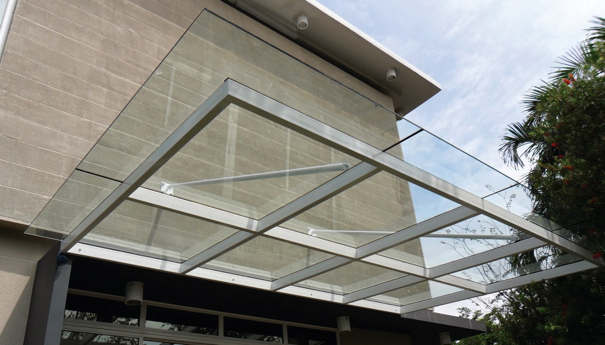
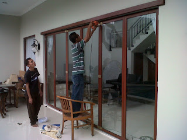
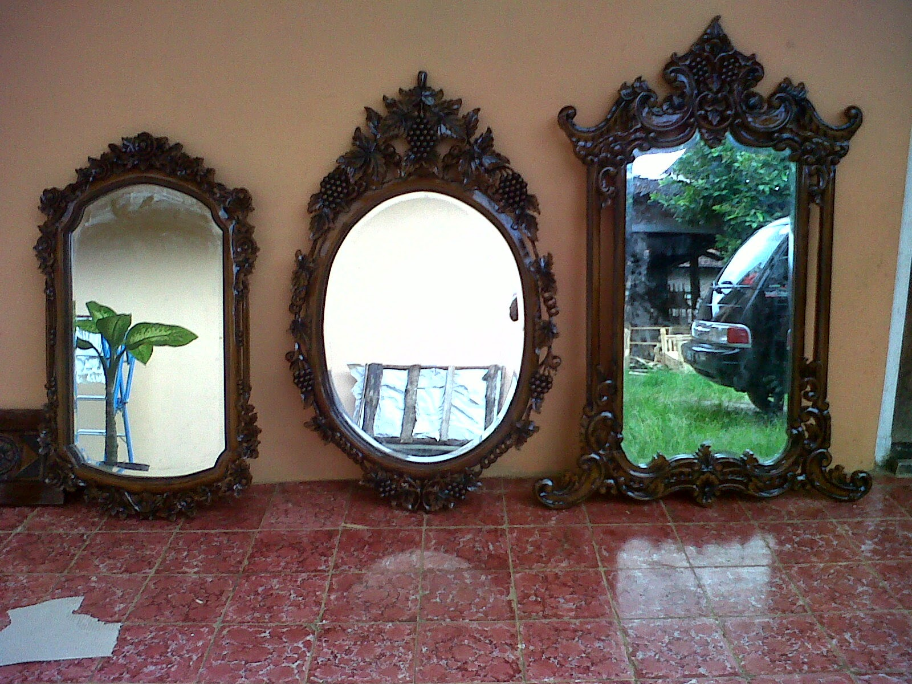
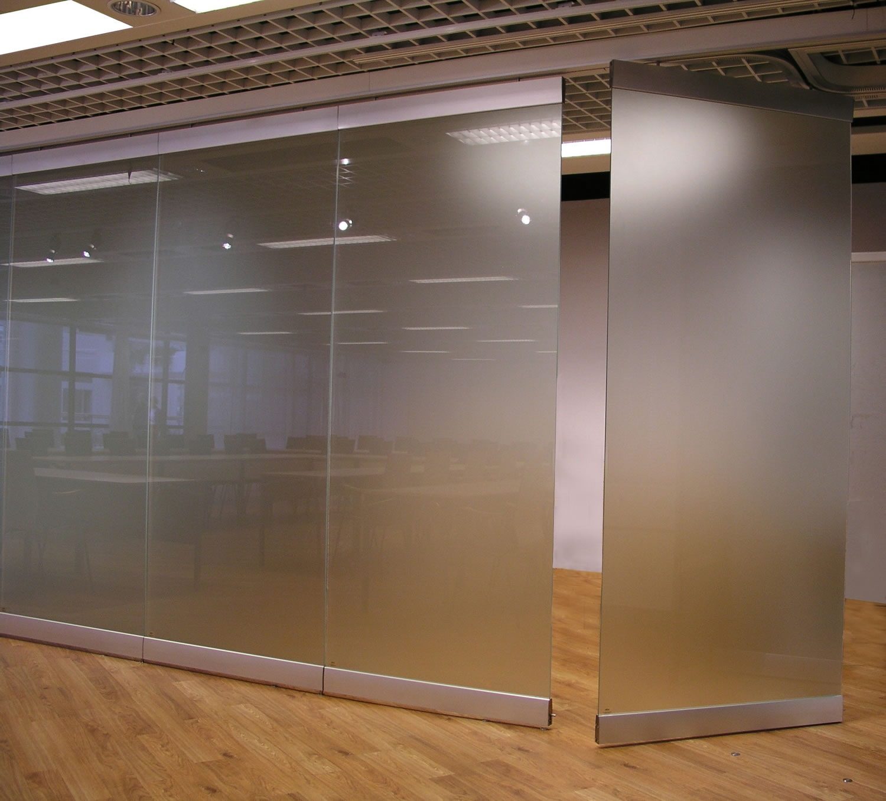

Kian berkembangnya kemajuan zaman, menciptakan banyak bahan atau material pelengkap yang bisa mempercantik hunian atau daerah usaha anda. Banyak material pendukung yang dapat dipakai seperti kaca, parket lantai kayu dan masih banyak lagi. Tak cuma memperindah, melainkan material pelangkap hal yang demikian dapat memberi garansi keamanan pada penghuni di dalamnya. Kaca kian melengkapi bangunan supaya kelihatan lebih indah dan memiliki poin estetika kalau di pandang orang. Banyak variasi dari kaca yang bisa di gunakan untuk banguan maupun rumah tinggal.
Tidak kaca tempered, kaca shower, kanopi kaca, parket kayu jati dan masih banyak lagi. Semua material tersebut dapat di aplikasikan harga sebuah hunian terlihat lebih cantik nyaman dan juga aman.
Distributor & Supplier Kaca Shower Jambi
Anda pastinya meninginkan desain kamar mandi rumah layaknya kamar mandi hotel berbintang yang memakai kamar kecil duduk serta dilengkapi shower ataupun bath tub. Dengan mengaplikasikan kaca shower Jambi pastinya kamar mandi yang dimiliki akan lebih nampak mewah dan menjadi sekat antara area basah dan zona kering. Tidak mau lebih sempurna lagi, kamar mandi yang menerapkan shower ini dapat dilengkapi dengan komponen lain ialah shower screen atau bisa disebut dengan kaca shower Jambi. Jadi sistemnya jauh lebih praktis sebab tidak perlu menyiapkan bahan sendiri untuk membikin sekat ruang. Ada beberapa alasan kenapa Pintu Kaca Shower banyak diaplikasikan salah satunya ialah kaca lebih terlihat bersih dan rapi dan juga lebih mudah dalam perawatannya. Kecuali ini akan berdampak kepada biaya yang akan dikeluarkan untuk membayar tukang. Apalagi sekarang sudah ada warung penjual shower screen yang menjual produknya dalam metode satu paket termasuk pemasangannnya. Kita tak perlu repot lagi mencari tukang sendiri karena pemasangan alat sekat ini memang membutuhkan teknik tersendiri.
Tidak cuma itu, kaca shower Jambi yang di beli di dis.or.id pemasangan lebih gampang dan fleksibel. Harga yang ditawarkan pun tergolong amat murah.
Info Pemesananan Selengkapnya
Google Maps: https://www.google.com/maps/d/u/0/viewer?mid=1I5MJD15eG4u4a5bgD4SWwLmUemJgyEPx&ll=-7.27380280025364%2C112.65243155000007&z=18
Note: https://www.facebook.com/notes/distributor-of-industrial-supply/pabrik-supplier-kaca-shower-kaca-pembatas-shower-kamar-mandi/1785693275063885/
Event: https://www.facebook.com/events/308143373033869/
Portfolio Produk: https://www.facebook.com/1681607345472479/photos/?tab=album&album_id=1712628919036988
Distributor, Supplier & Jasa Pasang Kanopi Kaca
Note: https://www.facebook.com/notes/distributor-of-industrial-supply/pabrik-supplier-kaca-shower-kaca-pembatas-shower-kamar-mandi/1785693275063885/
Event: https://www.facebook.com/events/308143373033869/
Portfolio Produk: https://www.facebook.com/1681607345472479/photos/?tab=album&album_id=1712628919036988
Distributor, Supplier & Jasa Pasang Kanopi Kaca
Salah satu variasi kanopi kaca yang bisa anda aplikasikan pada atap merupakan atap kaca skylight yang ialah kanopi kaca dalam format jendela horizontal atau kubah yang umumnya ditempatkan di atap bangunan yang mempunyai maksud untuk pencahayaan ruangan. Dan sensasi mandi menjadi lebih asik untuk dirasakan. Jadi telah tak heran lagi semua orang berkeinginan mencari harga yang benar-benar kompetitif untuk menyesuaikan budget atau anggaran mereka masing – masing untuk membikin produk canopy kaca. Disinilah letak perbedaan optis yang utama antara akrilik (acrylic) dengan kaca. Kalau tembus pandang, kaca meresap sinar yang masuk sehingga semakin tebal kaca karenanya semakin sedikit sinar yang dapat melewatinya, maka sifat transparannya makin berkurang.|Di samping pintu kaca shower akan membuat kamar mandi kecil tampak lebih besar. Pada atap akrilik, penyerapan cahaya yang terjadi demikian kecil sehingga padahal ketebalannya bertambah, sifat transparannya tak banyak berubah. Atap akrilik atau bisa juga disebut atap kaca acrylic ini banyak ditemukan di sebuah bangunan rumah, seperti ruko, apartemen, resto, mall, hingga bangunan gedung.
Seiring dengan perkembangan dunia properti, kini kanopi kaca tempered sudah berkembang pesat meniru arsitektur modern. Ini nampak dari bahan material yang di pakai dalam pembuatan kanopi kaca. Jikalau itu, kanopi juga bisa melindungi mobil dan kendaraan lain anda. Setelah kaca untuk atap kanopi cukup digemari. Tak anda sedang mencari kanopi kaca, anda bisa lantas mengunjungi dis.or.id. Disana anda akan mendapatkan kanopi kaca yang sesuai dengan bermacam ketebalan dan harga yang cukup relatif murah.
Jasa Maintenance Kaca
Jasa maintenance kaca menawarkan pelayanan perawatan bahan bangunan yang terbuat dari kaca. Kaca sungguh-sungguh membutuhkan perawatan karena setiap hari terkena sinar matahari atau juga hujan. Bermacam, kaca akan kelihatan kusam sebab telah lama tak dibersihkan. Peralatan variasi kotoran seperti debu serta sinar sang surya dan juga hujan tak jarang membuat kaca gedung menjadi kusan dan tidak menarik. Membersihkan bagian kaca gedung Anda yang mungkin rusak, pecah, atau mengalami keadaan sulit lainnya.
Kini juga hadir maintenance kaca untuk membersihkan kaca berbentuk melengkung.
Dis.or.id adalah perusahaan jasa di bidang maintenance kaca gedung dengan memberikan sebagian pelayanan. Salah satunya pelayanan berupa pembersihan kaca dengan menerapkan alat pembersih yang dapat membikin kaca gedung Anda tampak bersih seperti sediakala. Tersedia alat penyokong agar segala sisi gedung yang terbuat dari kaca bisa dipastikan seluruh sisi gedung bisa di bersihkan. Dis.or.id juga sudah mempersiapkan dengan beragam alat yang bisa digunakan untuk menjangkau semua sudut gedung, sekalipun gedung Anda sangat tinggi. Oleh karena itu, dis.or.id cuma memilih orang-orang yang amat profesional dan telah mempunyai pengalaman dalam hal maintenance kaca. Dengan telah memberikan training terhadap tenaga ahli sehingga mereka telah bisa melakukan profesi mereka dengan sangat bagus.
Jasa Pemasangan Kaca Tempered

Tak yang telah di ketahui bahwa jasa pemasangan kaca tempered hanya dilaksanakan oleh orang yang profesional. Dis.or.id memiliki segala tenaga spesialis yang di rekrut cuma mereka yang profesional yang tahu persis bagaimana sistem memakai alat dan bagaimana membersihkan kaca gedung bertingkat. Sementara itu, untuk rumah hunian, bagian dari rumah seperti kamar mandi serta kanopi umumnya terbuat dari kaca tempered. Banyak komponen properti yang bisa diwujudkan dengan bahan berupa kaca tempered. Namun dulu hanya gedung perkantoran atau sentra perbelanjaan modern saja yang menggunakan variasi kaca ini, kini rumah hunian juga sudah dibangun dengan kaca tempered. Kecuali ini tidak lain sebab kian banyak orang yang memahami kwalitas serta keunggulan dari kaca tempered ini.
Sementara itu, untuk hunian, kanopi dan kamar mandi menjadi bagian yang paling menarik jika dihasilkan dari bahan kaca tempered. Tidak anda tertarik untuk memasang kaca temeperd, anda hanya tinggal mengunjungi website dis.or.id. Bukan sembarang alat yang diaplikasikan untuk memotong kaca tempered sesuai dengan kebutuhan. Tidak saat ini anda sedang ingin membangun suatu bangunan atau gedung, anda dapat memanfaatkan kaca tempered untuk diaplikasikan segera ke semua ragam bidang. Jikalau aman kaca tempered juga sanggup memberikan kesan keindahan yang sungguh-sungguh baik dibandingi dengan kata ragam lainnya. Anda dapat segera mengunjungi dis.or.id untuk menerima berita mengenai jasa pemasangan kaca tempered, mengaplikasikan kaca tempered dan pastinya hasil yang diberi bahkan akan sesuai dengan apa yang Anda inginkan.
Distributor & Supplier Pintu Kaca

Kini telah hadir ratusan pintu kaca dengan desain yang berbeda-beda yang dapat di buat dan di pesan, entah itu pintu kaca frameless (tanpa frame) atau pintu kaca dengan frame. Tak cuma di gedung atau perkantoran, melainkan pntu kaca juga bisa anda aplikasikan pada rumah agar cahaya dapat segera masuk pada ruangan dan memberikan suasana hangat. Ada juga pintu kaca dengan bingkai dengan desain yang berbeda seperti folding dan sliding. Kini tersebut dapat terbuat dari kayu atau aluminum. Desain hal yang demikian bisa disesuaikan dengan konsep properti Anda. Sekarang tak kalah penting lagi yaitu pemilihan kaca. Sekarang paling banyak diminati dikala ini merupakan kaca tempered sebab jauh lebih kuat dan bendung lama.
Anda bisa mendapatkan pintu kaca yang dibutuhkan dengan mangunjungi dis.or.id. Observasi Ukuran serta ketebalan menyesuikan dengan keinginan Anda.
Dis.or.id siap untuk membuat pintu kaca pantas dengan apa yang Anda inginkan. Dis.or.id mempunyai tenaga yang telah betul-betul profesional di bidang ini. Untuk budget yang lebih sedikit, Anda dapat memilih jenis kaca non-tempered.
Jual Kaca Cermin

Kaca cermin kini mempunyai desain yang berbeda. Lihat saja banyak produk cermin yang diciptakan dengan desain unik dan menarik. kaca cermin umum digunakan pada bukaan pintu atau jendela dinding luar, yang nantinya diharapkan berpenampilan mewah pada bangunan. Untuk bangunan bertingakat, terutama diterapkan pada ragam dinding kaca. Salah satunya, kaca cermin ini bersifat refletif. Ada cermin yang didesain unik seperti penyerupai daun, oval, dan lain sebagainya. Jadi, Anda dapat sesuaikan desainnya dengan desain ruangan yang akan Anda pilih untuk menempatkan cermin tersebut. Sementara itu, dikala diperhatikan dari luar, kaca ini reflektif. Cermin minimalis memiliki siku. Jika itu, kadang kala cerminnya tak ada bingkainya atau yang acap kali disebut dengan kaca cermin frameless.
Jika sebagai bahan untuk pintu kaca, kaca cermin ini juga masih dipakai sebagai aksesoris cermin. Malah, Anda dapat pakai kaca cermin ini sekalian sebagai material utama, seperti sebagai pintu lemari di kamar tidur Anda. Banyak orang yang lebih menyenangi dengan desain kaca cermin minimalis. Tidak model lemari pakaian di mana komponen pintunya terbuat dari kaca cermin. Jadi, orang di luar tak bisa mengamati Anda berada di dalam. Namun kunjungi dan temukan berita menarik mengenai kaca cermin hasrat anda.
Jasa Pemasangan Railing Kaca

Sekarang railing kaca kini kian populer. Tak Anda ingin mempunyai rumah dengan desain interior minimalis, betul-betul ideal saat bagian tangga dan juga balkon mengaplikasikan railing kaca ini. Selain ini disebabkan semakin banyak permintaan terhadap railing ini. Pemilik rumah ingin sekali mempunyai interior yang seperti itu minimalis. Tetapi, Anda semestinya pastikan railing kaca bermutu terbaik. Sebaiknya pakai kaca tempered sebab jenis kaca ini amat kuat. Apabila itu, dari segi keamanan, kaca tempered ini juga tepat sekiranya menjadi pilihan Anda. Pun juga bahan yang digunakan.
Anda dapat memilih kaca dengan kwalitas terbaik. Anda dapat memilih kaca tempered sebagai bahan utamanya. Ini ialah ragam kaca yang betul-betul baik dan kuat. Sekiranya itu, kaca ini dapat pecah tetapi tak menimbulkan pecahan yang runcing namun pecahan kecil-kecil dan lembut. Dengan demikian, pecahan kaca tempered tidak akan melukai orang yang terkena pecahan. Pecahannya sungguh-sungguh kecil dan lembut sehingga tidak akan melukai siapa saja yang terkena pecahan. Seandainya memberikan kesan minimalis pada interior rumah, ini juga membikin rumah Anda menonjol lebih nyaman untuk diwujudkan tempat tinggal.
Railing kaca dengan mutu terbaik bisa anda temukan di dis.or.id. Harga yang amat ekonomis serta mutu terbaik yang sudah terjamin membuat anda tidak akan menyesal membeli railing kaca di dis.or.id. Tentu dengan harga yang murah tapi tetap berkelas.
Distributor & Supplier Pintu Lipat Kaca
Bukan hanya komponen depan saja yang dipasang pintu kaca lipat tapi bagian dalam juga dapat. Seandainya ruang makan bersebelahan dengan taman, Anda dapat sekat dengan pintu lipat kaca ini. Apalagi apabila taman Anda terbuka sehingga pencahayaan natural masuk. Maka, cahaya itupun akan masuk ke dalam ruang makan sebab penyekatnya terbuat dari pintu kaca transparan.
Ukuran kaca menjadi unsur penentu berapa harga pintu kaca lipat yang Anda inginkan. Akan tapi, ada juga penentu harga lainnya seperti aksesoris.
Jasa Pemasangan Kubikel Toilet
Kubikel kaca banyak dijumpai di beraneka tempat besar seperti perkantoran, gedung, bahnkan kini juga dapat di gunakan untuk hunian rumah.
Dengan menerapkan WC kubikel tentnya toilet yang anda miliki Kelihatan lebih elegan dan mewan jauh dari kesan dekil. Kaca juga bisa menjadi solusi estetika kamar mandi, melainkan juga bisa jadi masalah bila Anda menerapkan material dan daerah yang salah. Toilet kubikel juga memberikan hal yang efisien dan efektif dalam pembagian space kamar mandi yang kecil.
Profit dari sekat kaca memberikan merupakan dapat memberikan efek luas sebab ruangan tersekat tetapi secara visual tak.
Tapi penggunaan kaca di kamar mandi dapat jadi persoalan dikala Anda meletakkannya dengan salah. Justru embun bisa melekat di kaca dan lambat laun dapat membikin kaca tak sejernih semula. Sekiranya anda saat ini sedang memerlukan kaca shower untuk kamar mandi, langsung saja kunjungi dis.or.id untuk melakukakn pengorderan maupun menanyakan detil harga dari kaca shower.
Distributor & Supplier Partisi Kaca

Partisi kaca tidak lagi dianggap sebagai hal yang aneh lagi. Sekarang, partisi kaca ini juga diaplikasikan untuk rumah hunian. ini disebabkan banyak keunggulan dari partisi modern ini. Sebab memang biaya pembuatan partisi ini jauh lebih murah. Anda bisa menghitung sendiri berapa uang yang harus Anda siapkan untuk membeli bahan untuk partisi tembok. Belum lagi biaya untuk tukang yang dapat lebih banyak daripada tarif pembelian bahan bangunan. Anda bisa mendapatkan partisi kaca yang anda inginkan di dis.or.id. Jadi, Anda akan sungguh-sungguh berhemat seandainya memilih untuk memasang partisi kaca ini. Anda memakai partisi kaca ini sebagai penyekat beberapa ruangan seperti kamar mandi dalam, taman dalam ruangan, ruangan bermain di dalam rumah, dan lain sebagainya. Kecuali itu, tentukan juga ragam kaca yang dipakai apakah transparan, semi transparan, atau kaca cermin yang membikin ruangan betul-betul privat. itu, partisi kaca ada yang frameless (tanpa bingkai) dan juga ada yang mengaplikasikan frame. Bila anda untuk memasang dinding kaca penyekat, dis.or.id menyediakan jasa pemasangan dinding kaca penyekat untuk kamar mandi rumah anda. Disana anda akan partisi kaca yang cocok dengan harapan anda.